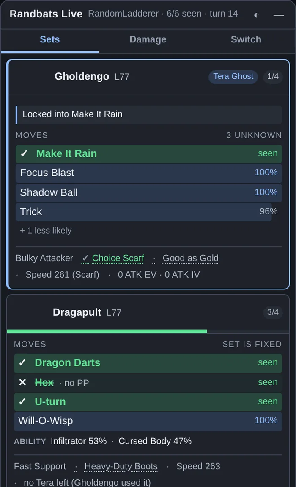
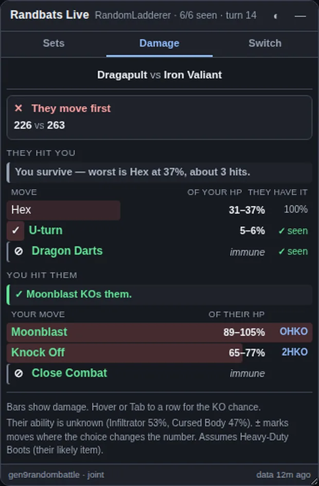
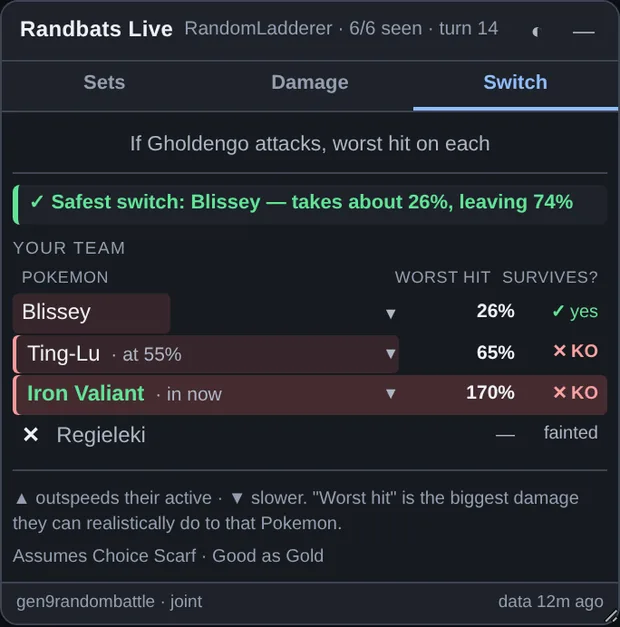

01Sets — what are they running?
The default tab. One card per opposing Pokémon, sorted with the active one first and the fainted ones last.
The bars are moves, and the number beside each is the chance that move is in one of the slots you haven't seen yet. seen means they've already used it. The header says how many slots are still open — 3 unknown, or set is fixed when there's only one possible set left.
Everything that has stopped being a question shrinks. A settled item, ability or role drops out of its own block and becomes one grey word on the line at the bottom of the card. Anything still genuinely in doubt stays as a compact row — ITEM Assault Vest 76% · Leftovers 24%. So what's taking up space on screen is, deliberately, only what's still undecided.

Hover anything for what it actually does, pulled from Showdown's own dex — moves also show type, base power, accuracy and priority. Click a card header to fold it away.
02Damage — what happens if we both attack?
The current matchup, both directions.
Read the two verdict lines and you can stop there. They say in words what the table says in numbers:
You survive — worst is Headlong Rush at 64%, about 2 hits.
Moonblast KOs them.
Above them sits the speed line: who moves first, with boosts, paralysis, Tailwind and Trick Room already folded in. If it says "You move first — unless Choice Scarf", that is exactly what it means, and the number it would become is right there.

Two marks worth knowing. ± means their item or ability choice genuinely moves that number, so treat it as a range rather than a figure. immune rows are shown on purpose rather than hidden — a move that can't touch you is the single most useful thing to be told.
In doubles there are up to four pairings and you pick which one you're looking at. The buttons across the top are every matchup actually on the field.
03Switch — should I get out?
Your six, ranked against the worst hit they can realistically land.
It leads with the answer: "Safest switch: Blissey — takes about 32%, leaving 68%." Safest means HP left standing, not the smallest damage figure. A wall already chipped to 55% that takes 25% is in more trouble than a healthy one that takes 32%, so chipped slots show their current HP inline and sort accordingly.

If nothing on your bench lives through their best hit, the tab says so rather than recommending a Pokémon that dies. In doubles it ranks against both of their actives, because being safe from one of them isn't being safe.
KO, and the numbers in front of it
KO is short for knock out — the Pokémon faints. The number tells you how many hits it takes.
- OHKO
- One-hit KO. That single move kills. The one you most need to see before you decide anything else.
- 2HKO
- Two hits. You get one turn — to attack, heal, or leave.
- 3HKO
- Three hits. Comfortable, unless something else is chipping you.
- 8HKO
- Eight hits. In practice, that move isn't the thing that beats you.
Guaranteed vs possible
Damage in Pokémon rolls across a ±15% spread, so the same move doesn't always do the same thing. guaranteed 2HKO means every roll gets there. possible 2HKO means only the high rolls do — you're being told it's a gamble, not a plan.
KO on its own, in the Switch tab
The survives? column reads yes or KO. It's measured against that Pokémon's current HP, not its full bar — which is why a chipped Ting-Lu taking 68% reads KO while a healthy teammate taking 64% reads yes.
Three things the panel tells you that nothing else does
These come from watching the battle, not from set data, and they're easy to miss the first few games.
Install and setup
Loading it unpacked, and the two habits worth having.
- Unzip somewhere permanent. Chrome reads the folder off disk every launch — if you move or delete it, the extension stops working.
- Open
chrome://extensionsWorks the same in Edge, Brave and other Chromium browsers. - Turn on Developer mode, top right.
- Load unpacked, and pick the folder with
manifest.jsonin it. Pick the folder itself, not the zip and not a folder containing it. - Start a Random Battle. The panel appears by itself. Nothing to switch on.
Drag the panel by its title bar, resize from the bottom-right corner, and use ◐ for light mode. Position, size, theme and which cards you left open all persist between battles.
The toolbar button hides the panel, switches it between watching the opponent and watching your own side, and force-refreshes the set data.
After you replace the files with a new version
Chrome keeps running the old copy until you tell it not to. Go to
chrome://extensions and press the ↻ button on the
card. Nearly every "the update didn't do anything" is this.
If the panel looks empty
It always says why. The message is the diagnosis.
- No battle
- You're on the Showdown home page or a chat room. Open or spectate a battle.
- Not random
- The format has no published randbats data — OU, Ubers, Hackmons Cup and so on. The panel only speaks Random Battle.
- approx sets
- Multi and Free-For-All borrow the closest format's data. Still useful, just not exact, and the footer says so.
- Loading
- Fetching set data on first run. It's cached for six hours after that.
The footer of the panel always names the data file it's using and how old that data is, so you can tell at a glance whether you're looking at the right format.